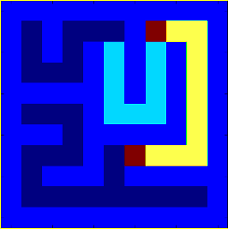
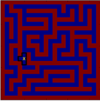
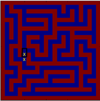
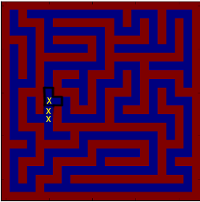

APS2 - Labirinto com listas encadeadas
Contato
- Jean Paulo Martins (jeanmartins utfpr edu br)
- Sala 105, Bloco S (UTFPR - Campus Pato Branco)
Conteúdo
Labirinto
Descobrir o caminho de saída a partir de uma posição de um labirinto é um problema computacional que quando generalizado pode ser aplicado a diversas situações. O objetivo geral é, dada uma posição inicial, encontrar um caminho que nos leve até uma posição destino, que no caso mais tradicional seria a saída do labirinto. A figura abaixo ilustra um pequeno labirinto, em que as posições iniciais e finais estão marcadas em vermelho.

O caminho em amarelho indica o caminho encontrado que nos levaria da posição inicial à final, enquanto o caminho em azul-claro indica um caminho percorrido mas que não levou à direção correta.
Etapa 1: representando o labirinto
Assim como a resolução de todo problema computacional, numa primeira fase precisamos decidir como representar os dados envolvidos. Até então, essa decisão consiste em definirmos como representar o labirinto na memória do computador. Para tal, precisamos definir quatro informações:
- posição inicial
- dimensões do labirinto
- posição final
- parede/caminho
Por se tratar de uma estrutura bidimensional, uma matriz bidimensional parece apropriada para armazenarmos o labirinto. Assumiremos também que toda posição na matriz igual a 1 representa uma parede, enquanto toda posição igual a 0 representa um caminho. Toda o labirinto será cercado por paredes, de modo que a posição final não estará, necessariamente, nas bordas. Vejamos o exemplo abaixo.
4 5
7 7
1 1 1 1 1 1 1
1 0 1 0 0 0 1
1 9 1 0 1 0 1
1 0 1 0 1 0 1
1 0 1 1 1 0 1
1 0 0 0 0 0 1
1 1 1 1 1 1 1
Assumiremos que o primeiro par de valores indique a posição inicial, a partir da qual a procura pela saída se iniciará. A segunda linha contém as dimensões do labirinto $7\times7$ no exemplo acima. A partir da terceira linha temos a definição do labirinto em termos de paredes (1) e caminhos (0).
Por fim, observe que existe uma posição na matriz com o valor 9, este valor quando encontrado em uma determinada posição, indica que tal posição é a saída do labirinto. Portanto, nosso objetivo é sair da posição inicial (4,5 no exemplo) e chegar à posição final (2,1 no exemplo)
Etapa 2: procurando pela saída
Ao iniciarmos em uma posição do labirinto as únicas alternativas possíveis consistem em prosseguir em uma das quatro direções:
- Acima,
- Abaixo,
- Esquerda,
- Direita.
Ao escolhermos uma dessas possíveis opções, no entanto, pode ser o caso de não encontrarmos a saída. Deste modo, seria necessário retornar a alguma das demais possibilidades para a busca prosseguisse novamente. Este fato requer que armazenemos a cada passo no labirinto todos os caminhos alternativos.
Vejamos através do exemplo abaixo. O X indica a posição atual, e o bloco circundado indica os caminhos possíveis a partir dalí.
| Abaixo,Esquerda,Acima | Acima | Acima, direita |
A partir de uma posição, olhamos ao redor, e a cada caminho aberto adicionamos seu índice em uma estrutura de armazenamento. Na figura à esquerda temos então, que após olharmos ao redor, as possibilidades armazenadas seriam os indices das posições à Abaixo, Esquerda e Acima. Qual dessas opções seguiremos agora?
Simplesmente devemos remover da estrutura de dados alguma possibilidade de caminho continuar a avaliação por ela, ou seja, novamente olhar ao redor e armazenar os novos possíveis caminhos. Por exemplo, se nossa estrutura de armazenamento for uma pilha (stack), o último caminho inserido seria o primeiro a ser removido, deste modo, pop() nos retornaria o índice de Acima. Se por outro lado, a estrutura de armazenamento fosse uma fila (queue) o primeiro caminho inserido seria o primeiro removido e pop() nos retornaria o índice de Abaixo.
Esse processo se repetirá até que a saída seja encontrada, ou seja, até que a posição atual visitada contenha um 9.
Etapa 3: imprimindo o percurso
A cada posição visitada do labirinto, os índices x e y da matriz deverão ser impressos, separados por um espaço. A sequência de passos será então repassada ao programa de interface gráfica que refará o caminho e nos mostrará os passos de forma visual.
Entrada (maze11x11.txt)
1 7 11 11 1 1 1 1 1 1 1 1 1 1 1 1 0 1 0 0 0 1 0 0 0 1 1 0 1 0 1 0 1 0 1 0 1 1 0 0 0 1 0 1 0 1 0 1 1 1 1 1 1 0 1 0 1 0 1 1 0 0 0 1 0 0 0 1 0 1 1 1 1 0 1 1 1 1 1 0 1 1 0 0 0 1 0 9 0 0 0 1 1 0 1 1 1 0 1 1 1 1 1 1 0 0 0 0 0 0 0 0 0 1 1 1 1 1 1 1 1 1 1 1 1 |
Saída (sol11x11.txt)
1 7 1 8 2 7 1 9 3 7 2 9 4 7 3 9 5 7 4 9 ... 7 6 -1 -1 |
Etapa 4: visualizando o percurso
A saída produzida pelo seu programa se tornará entrada para visualização do percurso. Para isso utilizaremos um programa feito na linguagem de programação Python3, a qual precisa ser instalada de antemão
As instruções descritas nos links acima, nos permite instalar python3 e o seu gerenciador de pacotes pip3. No Ubuntu esses passos são resumidos como:
sudo apt install python3 # instala o python3
sudo apt install python3-pip # instala o gerenciador de pacotes pip3
sudo apt install python3-matplotlib # instala o pacote matplotlib
pip3 install matplotlib # instala o pacote matplotlib
Se tudo correr bem, você agora poderá executar o programa, o qual pode ser baixado em maze.zip
python3 maze.py matriz11x11.txt < sol11x11.txt
Existem outros exemplos de labirintos (entrada e saída) que podem ser utilizados para testes. Eles se encontram nos diretórios input/ e output/, respectivamente.
Etapa 4: submissão
A implementação deverá ser submetida como quatro arquivos, todos dentro de uma pasta (diretório) de nome RA e compactada como RA.zip.
| Padrão de nomes | Exemplo de nomeação (23931913.zip) |
|---|---|
list.h |
list.h |
RA_forward_list.c |
23931913_forward_list.c |
RA_list.c |
23931913_list.c |
RA_main.c |
23931913_main.c |
Os arquivos RA_forward_list.c e RA_list.c são as implementações de listas de encadeamento simples e duplo, respectivamente. O código-fonte em RA_main.c implementa a solução para o Labirinto, porém o código-fonte da lista não deve estar nesse arquivo! deverá ser utilizado por meio da inclusão de list.h.
/* RA_main.c */
#include "list.h"
/* Funções auxiliares */
int main() {...
Avaliação
Os itens abaixo serão avaliados nos códigos submetidos.
- Organização/modularização do código em
RA_main.c: as funcionalidades estão separadas em funções? - Flexibilidade do código: o quanto difícil é alterar a implementação? (trocar pilhas por filas, por exemplo)
- Gerenciamento de memória apropriado: memória alocada foi desalocada corretamente?